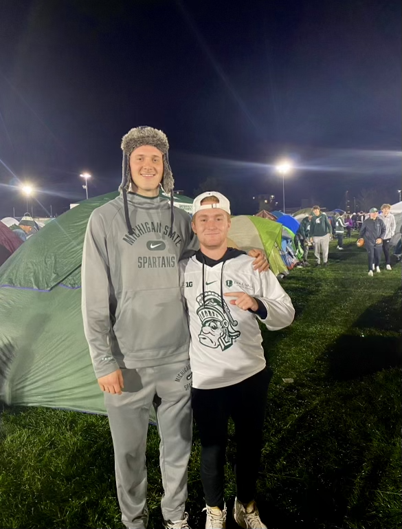

Court to Camera: AD+PR Student Lands Sports Branding Internship in Hometown
Maria BonucchiFrom the luscious greens of the soccer field to the powdered slopes of Schuss Mountain, Michael Iverson has tried his limits in every sport. When coming to MSU from Petoskey, a small lake town in northern Michigan, Iverson was eager to be part of a community with sports grown deeply into its roots. "Sports have been my life for as long as I can remember," said Iverson. "I had a pretty big culture shock when I realized how large MSU sports actually are." After taking classes in MSU's Department of AD+PR, Iverson began searching for an opportunity to put his sports management minor to use somewhere close to home. To his luck, the Timberwolves of North Central Michigan College (NCMC) athletics needed a sports promotions intern. "I have always wanted a career in sports whether on the field or behind-the-scenes. The only issue is that I never actually did any of the 'behind-the-scenes' work until I took the position,"" said Iverson. From June to August of 2023, Iverson was tasked with creating social media content for all NCMC athletics. This included media day promotions, practice and game highlights, fundraising opportunities, and more. With no previous experience in videography, visual design, or promotional writing, he took it upon himself to learn various techniques and platforms to create eye-catching content. "The most difficult part of my job was also the most exciting. I loved going to all the practices and seeing the teams work, but my camera sometimes made the athletes stiffen up," said Iverson. "I learned to be more subtle with my approach so I could get the best action shots."

After experiencing the liveliness of MSU sports, Iverson was determined to bring a higher level of innovation and professionalism to the Timberwolves posts. He mentioned the excitement and thrill of the MSU Izzone. "Honestly, there's nothing like it. Being right there, courtside, chanting 'Go Green, Go White!' I wanted to bring some of that energy back to Petoskey through my work,"" said Iverson. Iverson is planning on working for NCMC again this summer to continue building his sports advertising portfolio. This is experience is one he will travel with, whichever team he's rooting for.